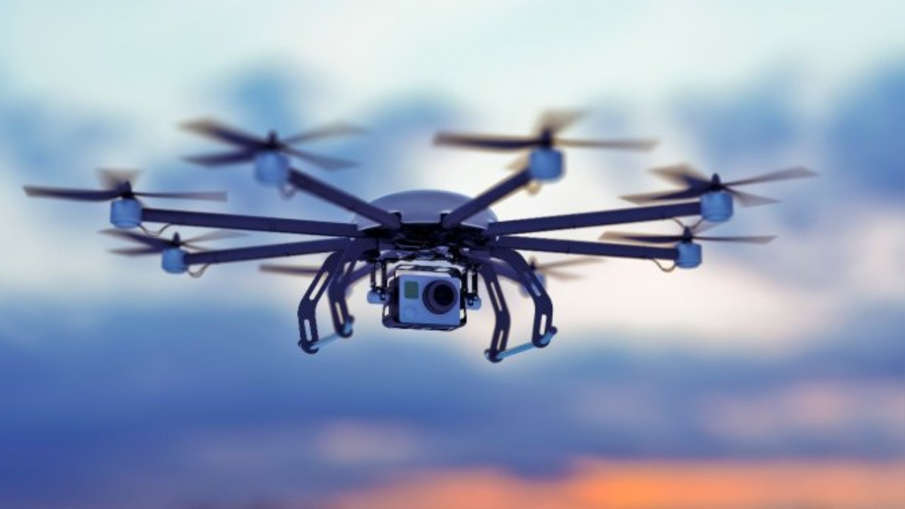
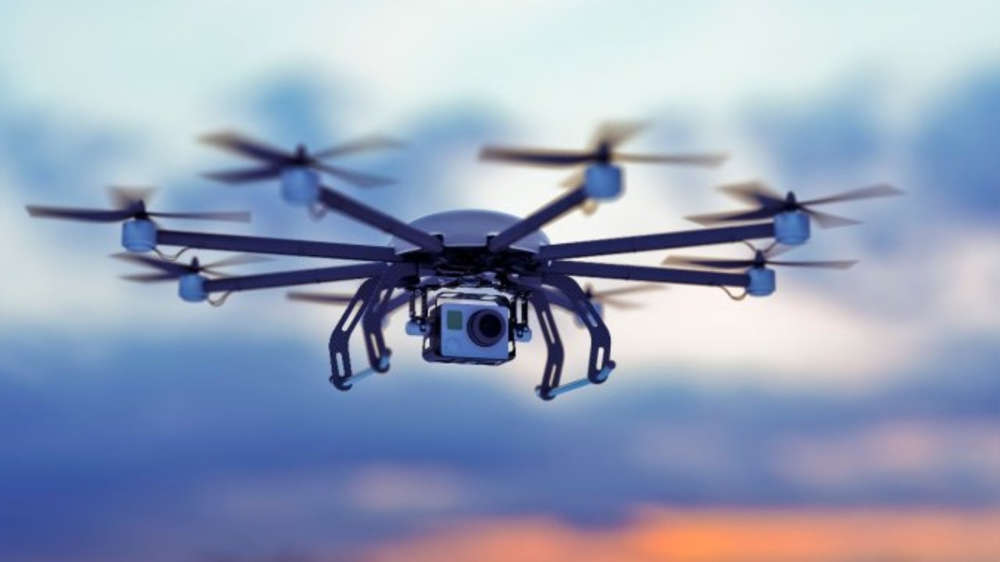

human based skills such as learning, reasoning, and solving problems.
The intelligent digital personal assistants like Siri, Google Assistant,
Cortana, Alexa are all powered by AI.
AI system can also learn from past experiences or outcomes to
make new decisions.
A knowledge base is a store of information consisting of facts,
assumptions and rules which an AI system can use for decision making.
MACHINE LEARNING
wherein computers have the ability to learn from data using statistical techniques,
without being explicitly programmed by a human being.
It comprises algorithms that use data to learn on their own and make predictions.
These algorithms, called models, are first trained
and tested using a training data and testing data, respectively.
NATURAL LANGUAGE PROCESSING
 The predictive typing feature of search engine that
The predictive typing feature of search engine that helps us by suggesting the next word in the sentence
while typing keywords and the spell checking features
are examples of Natural Language Processing (NLP).
It deals with the interaction between human and computers using human spoken languages.
An NLP system can perform text-to-speech and speech-to-text.
It is possible to search the web or operate or control our devices using
our voice.
IMMERSIVE EXPERIENCE
- Virtual Reality
- Virtual Reality (VR) is use of computer technology
to create a simulated environment.
Unlike traditional user interfaces, VR places the user inside an experience.
Instead of viewing a screen in front of them, users are immersed and able to
interact with 3D worlds/objects.
- Every headset is used to perfect their approach to creating an
immersive 3D environment. Each VR headset puts up a screen in front of eyes thus,
eliminating any interaction with the real world.
- Two autofocus lenses are generally placed between the screen and the eyes that
adjust based on individual eye movement and positioning. - The visuals on the screen are rendered either by using a mobile phone
or HDMI cable connected to a PC. - A frame rate of minimum 60fps, an equally competent refresh rate and
minimum 100-degree field of view (FOV) is required for true VR.
- Every headset is used to perfect their approach to creating an
- Augmented Reality
-
An "immersive experience" pulls a person into a new or augmented reality, enhancing
everyday life via technology. It often use one or more technologies linked together.
The three pillars of immersive experiences are visual quality, sound quality, and
intuitive interactions.
Full immersion can only be achieved by simultaneously applied all these three.
It involves technologies like S.L.A.M. (simultaneous localization and mapping),
depth tracking (briefly, a sensor data calculating the distance to the objects).
ROBOTICS
A robot is basically a machine capable of carrying out one
or more tasks automatically
with accuracy and precision.
Unlike other machines, a robot is programmable, which
means
it can follow the instructions given through
computer programs.
Robots that resemble
humans are known as humanoids.
Robots are being
used in industries, medical science, bionics, scientific
research, military, etc.
- NASA’s Mars Exploration Rover (MER) mission is
a robotic space mission to study
about the planet Mars.
- Sophia is a humanoid that uses artificial intelligence,
visual data processing, facial recognition and also
imitates human gestures and facial expressions.
- A drone is an unmanned aircraft which can be
remotely controlled or can fly autonomously through
software-controlled flight plans in their embedded
systems, working in conjunction with onboard
sensors and GPS.

 
